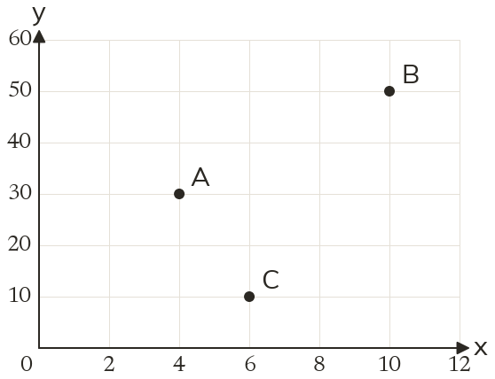
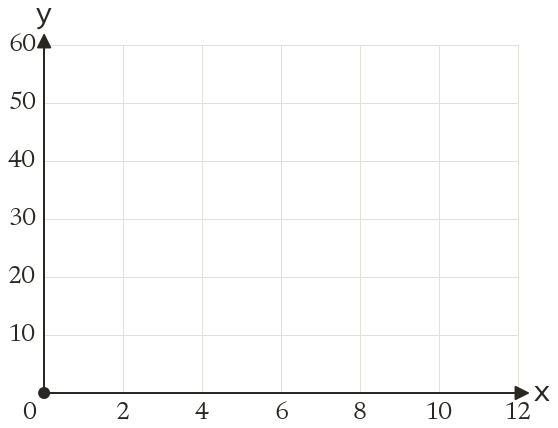
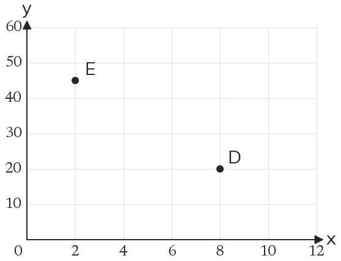

Westonbirt Maths · Coordinates, Graphs and Inequalities
Coordinate Problem Solving
Name: ______________________ Date: ____________
1
Write down the coordinates of A, B and C.
2
Plot D(8, 20) and E(2, 45) on the axes.
3
An x-axis goes up in steps of 5, one square per step. How many squares across is x = 40?
4
Each square on a y-axis is worth 0.5. What value is 9 squares up?
5
The x-axis goes up in 20s and the y-axis in 5s. A point is 4 squares right and 3 squares up. Write its coordinates.
Ext
In question 1, how far apart are A and B across: in units, and in squares?


